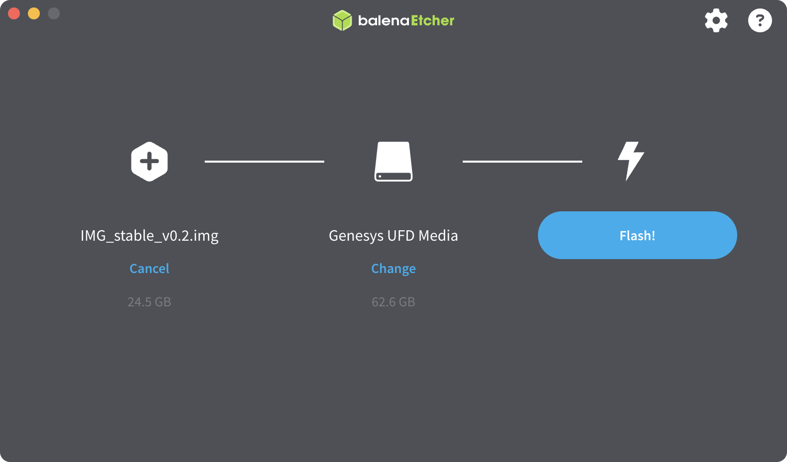

Для полноценной работы с Technic 6S необходимо установить образ для OPi через eMMC, идущий в комплекте с квадрокоптером.
Система Technic построена на базе операционной системы Ubuntu и робототехнической платформы ROS.
Перейдите на страницу релизов проекта и скачайте актуальный стабильный образ.
Загрузите и установите приложение Etcher, доступное для всех популярных операционных систем (Windows, Linux, macOS).
Подключите модуль eMMC к компьютеру, при необходимости используйте адаптер.
С помощью Etcher выполните запись загруженного образа на eMMC.
После записи установите модуль в **OPi.

После того как образ будет записан на eMMC, можно подключаться к Technic по Wi-Fi, использовать беспроводное подключение к QGroundControl, получать SSH-доступ и пользоваться всеми функциями системы.